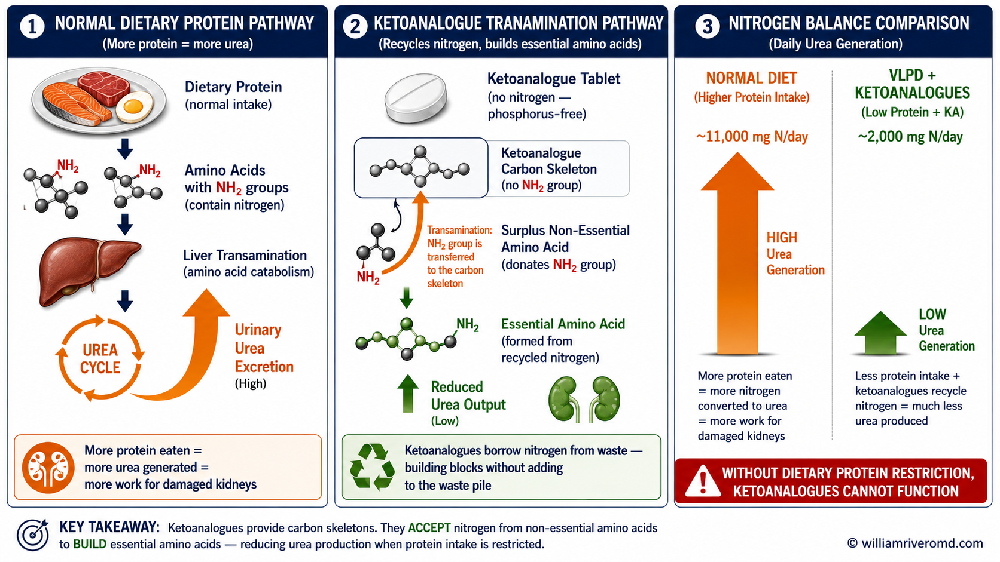
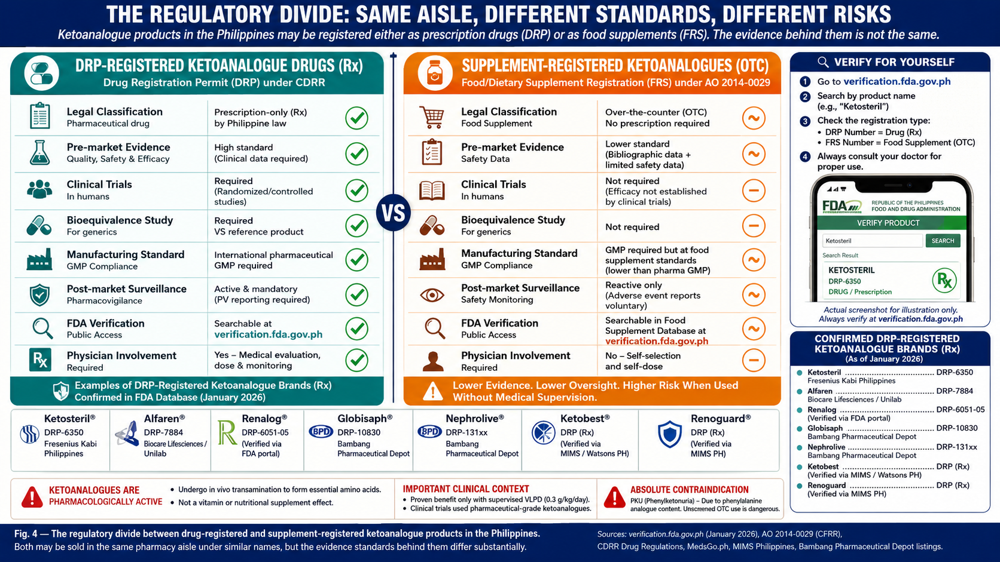
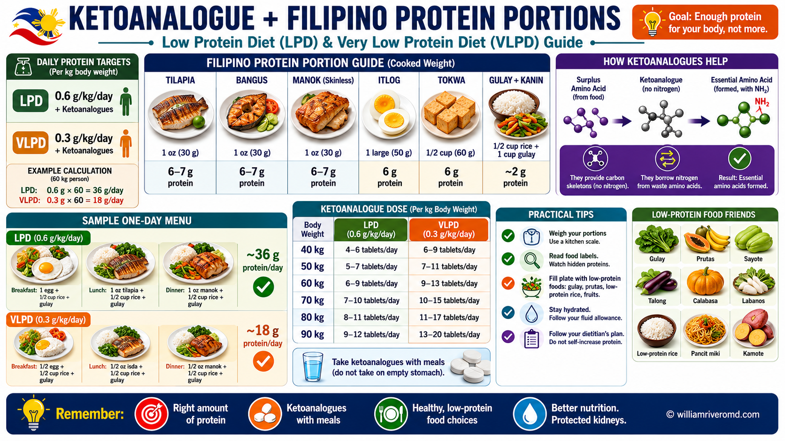
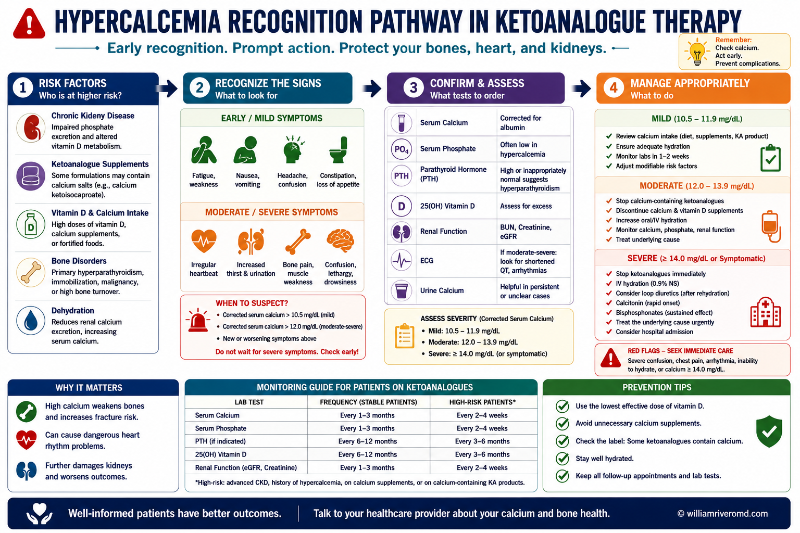

Ketoanalogues (KA) are nitrogen-free structural analogues of essential amino acids. Unlike the amino acids found in food protein, they do not carry a nitrogen atom in their backbone. This single biochemical difference is the entire basis for their clinical use in kidney disease.
Nitrogen Recycling
KA accept a nitrogen group from non-essential amino acids through a process called transamination, forming the essential amino acid without adding new nitrogen to the body.
Reduced Urea Load
By recycling nitrogen rather than adding it, KA help lower blood urea nitrogen (BUN) — one of the main toxins that accumulates when kidneys fail.
No Phosphorus
Unlike dietary protein sources (meat, fish, eggs), KA are phosphorus-free. This prevents the additional phosphorus burden that worsens kidney bone disease.
Essential AA Repletion
On a very-low-protein diet, essential amino acids become deficient. KA replenish them safely, preventing malnutrition while the diet is restricted.
The analogy: Imagine ketoanalogues as an empty container that needs to be filled with nitrogen to become useful. Your body provides that nitrogen — taken from waste amino acids that would otherwise become urea. The result: a building block your body needs, made from recycled material, without adding to the nitrogen waste pile. But this only works if you first reduce how much new nitrogen you are pouring in through your diet.

The reference formulation studied in all major clinical trials is Ketosteril (Fresenius Kabi), which contains 10 components per tablet: five keto-acid calcium salts (ketoanalogues of isoleucine, leucine, phenylalanine, valine, and methionine) plus five essential amino acids (lysine, threonine, tryptophan, histidine, and tyrosine).[1] Each tablet delivers 36 mg of nitrogen and 0.05 g of calcium. The standard dose is 1 tablet per 5 kg body weight per day, taken with meals — never on an empty stomach.
Ketoanalogues are not appropriate for everyone with elevated creatinine. They belong to a specific, well-defined clinical scenario. Understanding the three patient personas clarifies when KA help, when they are irrelevant, and when they may cause harm.
| Patient Profile | KA Indicated? | Dietary Direction | Rationale |
|---|---|---|---|
| CKD Stage 3b–5 (pre-dialysis) eGFR <30, not yet on dialysis |
YES — Primary | Protein DOWN LPD 0.6 g/kg or VLPD 0.3 g/kg |
KA compensate for essential AA restriction while reducing nitrogen load and slowing progression |
| CKD5d — Well-nourished on dialysis Albumin ≥3.5 g/dL, eating adequately |
NO | Protein UP Target 1.0–1.2 g/kg/day |
Dialysis removes urea — nitrogen recycling rationale disappears. Higher protein intake is now the goal. |
| CKD5d — Malnourished on dialysis Albumin <3.5 g/dL, struggling with protein intake |
CONDITIONAL | Protein UP (KA bridges transition) | KA serve as phosphorus-free essential AA scaffold while the patient works toward dietary protein targets. Requires direct nephrologist supervision and calcium monitoring. |
| CKD Stage 1–3a (early CKD) eGFR >45, elevated creatinine only |
NO | Balanced diet; moderate protein | Insufficient evidence; VLPD not recommended at this stage; risk outweighs benefit |
| Acute kidney injury (AKI) | NO | Standard nutritional support | AKI is a catabolic state — protein restriction is actively harmful. KA have no evidence base here. |
The eGFR threshold matters clinically. KDIGO 2024 supports KA-supplemented VLPD as a conditional recommendation for CKD stages 4–5 (eGFR <30 mL/min/1.73m²) in motivated patients with access to metabolic monitoring.[2] Below eGFR 15, the pre-dialysis window narrows; timing of KA initiation must be weighed against imminent dialysis need to avoid nutritional compromise during transition.
Prerequisites before starting KA — all must be met:
These are the questions most commonly asked by patients — and the misconceptions most commonly held by prescribers outside nephrology.
This is the most urgent issue this guide addresses. In the Philippines, ketoanalogues are legally classified as dietary supplements, not pharmaceutical drugs — which means no prescription is required to purchase them. A patient can decide on their own, based on a recommendation from a neighbor or a post seen online, to start taking them daily.
The supplement classification creates a dangerous illusion of safety. Supplements, by regulatory definition, are assumed to be low-risk products taken in addition to a normal lifestyle. Ketoanalogues are the opposite: they are biochemically active compounds that only function correctly within a framework of severe protein restriction, regular laboratory monitoring, and physician oversight. Taken outside that framework, they do not protect the kidneys — they add a daily calcium load to a patient who is receiving no benefit from the drug.
The three things that cannot happen with unguided OTC use:
- Dietary restriction cannot self-prescribe. Most patients who self-initiate KA continue eating normally. Without a protein-restricted diet, ketoanalogues are biochemically overwhelmed and clinically inert — but the calcium keeps accumulating.
- Hypercalcemia cannot self-diagnose. Early hypercalcemia (nausea, constipation, mild confusion) is easily attributed to other causes. Without scheduled serum calcium checks, it will progress silently until it is severe.
- CKD staging cannot self-determine. Without knowing the actual eGFR and proteinuria level, a patient cannot know whether they are in the window where KA may help, are too early (unnecessary risk), or too late (dialysis imminent, KA window has closed).
If you are currently taking ketoanalogues purchased without a prescription: do not stop abruptly, but schedule a nephrology visit as soon as possible. Bring the product packaging. Ask for serum calcium, eGFR, and urine protein to be checked. A nephrologist can determine whether the indication is correct and whether a monitored diet plan should be started.
This is one of the most common and concerning misuses seen in clinical practice. An elevated creatinine alone — without confirmed CKD staging, without dietary assessment, and without a protein restriction plan — is not a valid indication for ketoanalogues.
Heart patients often eat a normal or high-protein diet. In this setting, a ketoanalogue cannot overcome the nitrogen burden of three full meals a day. The transamination capacity of a standard KA dose recycles roughly 432 mg of nitrogen daily — a trivial amount compared to the 10,000–12,000 mg of nitrogen generated by a normal Filipino diet each day. The drug is biochemically overwhelmed before it can act.
More importantly, the calcium load from KA (0.6 g/day at full dose) added to an already calcium-loaded cardiac regimen — often including calcium-containing antacids, calcium supplements, or active vitamin D — can cause hypercalcemia, which directly worsens kidney function through renal vasoconstriction.
What to do: Ask your cardiologist to coordinate with a nephrologist before continuing KA. A nephrologist can determine whether the indication is correct and whether dietary modification should accompany the prescription.
Yes — absolutely, always, without exception. This is the single most important message in this guide.
Ketoanalogues are not a substitute for dietary change. They are a dietary prosthetic — a tool that makes a very-low-protein diet nutritionally safe by replacing what the restricted diet removes. Without the dietary restriction, the ketoanalogue has no clinical purpose.
Every clinical trial that demonstrated KA benefit — including the landmark Garneata RCT (JASN 2016) showing delayed dialysis — was conducted in patients eating 0.3 g of protein per kilogram of body weight per day.[3] That is roughly 18–21 grams of protein daily for most Filipino adults — approximately the protein content of two eggs and a small piece of fish. Without this level of restriction, no benefit has been demonstrated in any published study.
No. The dose of 1 tablet per 5 kg body weight per day is the studied and recommended maximum.[1,3] Exceeding this dose increases calcium intake without proportional benefit, raising the risk of hypercalcemia — a condition that itself damages kidney function.
Some insurance systems (notably Taiwan's National Health Insurance) cap reimbursement at 6 tablets daily — approximately 1 tablet per 10 kg — raising legitimate questions about whether sub-therapeutic doses commonly used in cost-constrained settings can replicate trial results.[4]
This is an important and unresolved question. All major clinical trials that established the clinical benefit of ketoanalogues used a single reference formulation. No published clinical trial has validated any other brand against this reference standard. When you switch to a generic brand, you are extrapolating evidence from one product to an unvalidated product.
There are several reasons quality may vary: differences in calcium salt formulations affecting dissolution rate, differences in API sourcing, and — critically in the Philippines — the difference between products registered as pharmaceutical drugs (requiring more rigorous quality review) versus those registered as food supplements (requiring less).
🔍 How to Verify Your Ketoanalogue Product — Philippine FDA
Visit the Philippine FDA Verification Portal. Select "Drugs" → "Registered Drugs".
Search the brand name. Look for a DRP number (Drug Registration Permit) — this confirms it was registered as a pharmaceutical drug, not a food supplement.
If you find only an FRS number (Food/Dietary Supplement registration), the product underwent a significantly less stringent quality review. Ask your physician before continuing.
Confirm the registration is currently active (not expired). CPR validity is 5–6 years.
For most dialysis patients — it depends on why you were prescribed them. If you were prescribed KA before dialysis for the purpose of delaying dialysis, that indication has ended. Dialysis itself removes urea and uremic toxins — the nitrogen recycling purpose of KA no longer applies. Furthermore, dialysis patients now need more protein (1.0–1.2 g/kg/day), not less.
However, a specific subgroup of dialysis patients may benefit: those who are malnourished with low albumin and struggling to meet protein targets. In this narrow setting, KA can serve as a phosphorus-free essential amino acid bridge while dietary protein intake is being increased — but this is a very different rationale, requires nephrologist supervision, and demands close calcium monitoring. Do not self-continue or self-discontinue — consult your nephrologist.
Do ketoanalogues directly add to the protein load? No — and this must be stated precisely. Ketoanalogues are nitrogen-free by design; their keto-carbon skeletons carry no amino group before transamination. The nitrogen that eventually forms the essential amino acid is recycled from the body's own surplus — not added from outside. KA themselves do not increase dietary protein load in the biochemical sense.
However, two indirect mechanisms produce net harm that is equally serious:
- Therapeutic misconception — the false reassurance effect. When a patient (or their prescriber) believes ketoanalogues are actively "protecting the kidneys," dietary restriction loses urgency. Patients continue eating 1.2–1.5 g/kg/day of protein — double or triple the VLPD target — because they feel the supplement is compensating. It is not. The full nitrogen and uremic toxin burden of an unrestricted diet continues unabated, while the KA remains biochemically overwhelmed and clinically inert. The net protein load on the kidney is not just unrelieved — the false sense of protection actively removes the motivation to restrict it.
- Phosphorus false security. Ketoanalogues are correctly described as phosphorus-free. But this phosphorus advantage exists only in contrast to the dietary protein they are meant to replace on a VLPD — not in contrast to an unrestricted diet. A patient eating normally generates the full phosphorus burden of their diet regardless of KA use. The clinician or patient may believe phosphorus is being managed because KA carry no phosphorus — while the patient continues eating high-phosphorus meat, dairy, and processed foods. The net phosphorus burden on the kidney: completely unchanged.
These are not theoretical concerns. They represent the clinical reality of ketoanalogue use without a supervised dietary framework — which, in the Philippine OTC supplement market, describes the majority of current use.
In the Philippines, not all ketoanalogue products on pharmacy shelves have undergone the same level of regulatory review. Some are registered as pharmaceutical drugs (with a Drug Registration Permit, or DRP number) — meaning they passed through clinical quality, safety, and manufacturing standards before reaching the market. Others are registered as food supplements (with a Food Registration Supplement number, or FRS number) — a classification that requires considerably less evidence before a product can be sold.
This distinction matters far beyond product quality. It determines something more fundamental: whether a physician must be involved at all.
- Supplement-classified ketoanalogues can be purchased without a prescription. A patient who hears about ketoanalogues from a neighbor, reads about them on social media, or is told by a pharmacist that they "help the kidneys" can walk into a drugstore and buy them — no physician consultation required.
- There is no mandatory dietary counseling at the point of sale. Without a prescribing physician to explain that protein restriction is the co-intervention that makes KA work, the patient takes the supplement on top of a normal or even high-protein diet — and derives no benefit while absorbing the full calcium load.
- Self-dosing is unpredictable. Without physician guidance on the weight-based dose (1 tablet per 5 kg body weight per day), patients may underdose (wasting money) or overdose (risking hypercalcemia), particularly when combining with calcium-containing supplements or active vitamin D they may already be taking.
- The product may not even be the correct formulation. Supplement-classified products do not require bioequivalence data. A patient buying a supplement-registered ketoanalogue may be consuming a product with a different salt form, different dissolution profile, or different component ratios than the formulation studied in clinical trials — with no way of knowing this from the label.
The regulatory loophole in plain terms: A company can register a ketoanalogue product as a food supplement by labeling it as a "dietary support for kidney health" rather than a treatment for CKD — thereby bypassing the clinical evidence requirements of drug registration. The product is then legally available over the counter. Several ketoanalogue products in the Philippine market carry FRS numbers, not DRP numbers. Without active physician engagement, the patient has no way of distinguishing these from properly registered pharmaceutical-grade products.

The practical consequence of over-the-counter availability is a complete bypass of the clinical framework that makes ketoanalogues safe and effective. A drug that requires dietary restriction, calcium monitoring, eGFR staging, and concurrent medication review becomes, in the supplement aisle, just another "kidney health" product next to herbal teas and multivitamins.
What patients should do: Before purchasing any ketoanalogue product, ask your nephrologist whether it is appropriate for your current kidney stage and whether your diet is already being restricted as required. If you already purchased a product over the counter, check its registration number at verification.fda.gov.ph and bring it to your next consultation. Do not assume that pharmacy availability equals medical safety for this drug class.
A note on the broader pattern: The over-the-counter availability of ketoanalogues in supplement form is part of a wider problem in Philippine nephrology — the commercialization of kidney-related nutritional products without the clinical infrastructure to use them correctly. Phosphate binders, omega-3 formulations, and probiotic renal supplements face the same issue. The physician remains the only safeguard in this environment. When that safeguard is removed by supplement classification, the patient carries the entire risk alone.
Dietary protein restriction is not a lifestyle suggestion — it is the pharmacological co-intervention that makes ketoanalogues work. The two cannot be separated. Think of it this way: ketoanalogues are the lock; dietary restriction is the key.

| CKD Stage | Protein Target | For 60 kg person | KA Dose | Philippine Food Guide |
|---|---|---|---|---|
| Stage 3b–4 eGFR 15–44 |
LPD: 0.6 g/kg/day | 36 g protein/day | Optional — monitor | ~1 palm-sized fish + 1 egg + ½ cup monggo |
| Stage 4–5 eGFR <25 |
VLPD: 0.3 g/kg/day | 18 g protein/day | Required (1 tab/5 kg) | ~1 egg + ½ cup tofu daily; rice & root crops for calories |
| CKD5d (dialysis) Well-nourished |
1.0–1.2 g/kg/day | 60–72 g protein/day | Not indicated | Fish, chicken, egg whites freely; dialysis removes urea |
| CKD5d (malnourished) Albumin <3.5 |
Work toward 1.0–1.2 g/kg | Increase gradually | Bridge dose — nephrologist supervised | Small frequent protein-containing meals; monitor serum Ca²⁺ |
✅ Safe Calorie Sources (Non-Protein)
- White rice, sinangag
- Kamote (sweet potato)
- Gabi, sago
- Cassava, corn
- Vegetable oils (coconut, canola)
- Low-phosphorus vegetables
- Sago drinks (no milk)
✅ Preferred Protein Sources on LPD/VLPD
- Egg whites (low phos, high bioavailability)
- Small portion bangus or tilapia
- Tofu / tokwa (rinse to reduce K)
- Monggo (moderate portions)
- Plant-based proteins preferred
⚠ Limit on VLPD + KA
- Red meat, pork (high phos + N)
- Processed meats (tocino, longganisa)
- Dairy products
- Nuts and seeds
- Legumes in large amounts
- Fast food and instant noodles
Remember the calorie principle: The body prioritizes energy over protein synthesis. If you are not eating enough calories, your body will burn amino acids (from both diet and KA) for fuel instead of using them for tissue repair. On a very-low-protein diet, caloric intake from carbohydrates and healthy fats must be deliberately increased — not reduced. A renal dietitian consultation is strongly recommended.
- Nausea, vomiting, constipation, excessive thirst, or confusion — these are symptoms of hypercalcemia (high calcium), the most serious side effect of KA, especially when combined with active vitamin D supplements.
- BUN or creatinine is rising despite taking KA — this almost always means the diet is not being restricted as prescribed. KA cannot compensate for an unrestricted protein intake. Review with your nephrologist urgently.
- Muscle weakness, unintentional weight loss, or decreasing grip strength — possible signs of protein-calorie malnutrition developing on the low-protein diet. Caloric intake must be assessed immediately.
- New or worsening bone pain, fractures, or eye redness/haziness — advanced hypercalcemia can cause calcium deposits in joints, soft tissues, and the cornea (band keratopathy).
- Calcium-containing antacids or supplements recently added to your regimen — total calcium intake must be recalculated. Avoid self-medicating with calcium-containing products while on KA.

For prescribers from non-nephrology specialties: If you are prescribing KA for a patient with cardiorenal syndrome, diabetic nephropathy, or any elevated creatinine not formally staged by a nephrologist, please consider the following before continuing:
- Has a 24-hour urine protein or urine ACR been measured? Has CKD stage been formally confirmed?
- Has dietary protein intake been assessed? Is the patient on a protein-restricted diet?
- Has baseline serum calcium been checked? Is the patient on active vitamin D, calcium supplements, or calcium-containing phosphate binders?
- Is there a nephrology referral in place? KA initiation without a coordinated dietary plan and monitoring schedule represents incomplete prescribing.
Co-prescribing KA without dietary restriction does not delay dialysis — but it does add daily calcium load and cost to a patient who derives no benefit.
Ketoanalogues are not a "start and forget" prescription. Regular monitoring is essential to confirm the intervention is working, catch complications early, and reassess the indication as kidney function changes.
| Parameter | Frequency | Target (CKD Pre-dialysis) | Action if Abnormal | Priority |
|---|---|---|---|---|
| Serum Calcium | Monthly × 3, then every 3 months | 8.4–10.2 mg/dL | Reduce KA dose; withhold active vitamin D; increase hydration | URGENT |
| BUN / Urea | Monthly | Declining trend | Rising BUN = diet non-adherence; review protein intake with dietitian | MONITOR |
| eGFR (CKD-EPI 2021) | Every 3 months | Stable or declining <3 mL/min/yr | Rapid decline = reassess dietary adherence, BP control, proteinuria | MONITOR |
| Serum Albumin | Every 3 months | ≥4.0 g/dL | <3.5 g/dL = malnutrition signal; increase caloric intake; dietitian referral | MONITOR |
| Serum Phosphorus | Every 3 months | 3.5–5.5 mg/dL | Elevated phos despite KA = hidden dietary phosphorus sources; review diet | MONITOR |
| Body weight & muscle mass | Every visit | Stable weight; no sarcopenia | Weight loss >5% = caloric deficit; increase non-protein calorie sources | ROUTINE |
| nPCR (if available) | Every 6 months | 0.3–0.6 g/kg/day on VLPD | nPCR >0.6 = protein intake exceeds prescription; dietary counseling | ROUTINE |
| Reassess KA indication | Every 6–12 months | — | If eGFR <10 or dialysis imminent: transition plan; if on dialysis: discontinue unless malnourished | ROUTINE |
When to stop ketoanalogues: (1) When dialysis is initiated and nutritional status is adequate; (2) Persistent hypercalcemia despite dose reduction; (3) Patient cannot maintain adequate caloric intake alongside protein restriction; (4) eGFR has recovered above 30 mL/min/1.73m² (rare but possible in treated glomerulonephritis); (5) Patient non-adherence to dietary protein restriction — KA without the diet is expensive and potentially harmful.